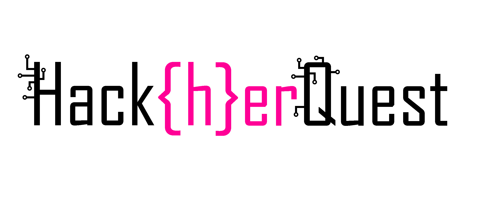

★
★
★
Radboud University
★
★
★

Radboud University
The Radboud Student Fund subsidises initiatives, projects and organisations that have an impact on Nijmegen student life and are
in line with the strategic themes of Radboud University. The fund does this based on the belief that it has a positive effect on
the development and well-being of students.
Radboud University is a research university located in Nijmegen, the Netherlands.Through the Radboud Student Fund, Radboud University
is kindly sponsoring Hack{h}erQuest to support our mission. They recognize the importance of diversity and inclusion in education and are
committed to fostering an environment where all students can thrive and succeed. By sponsoring events like Hack{h}erQuest, they aim to
inspire more women to consider careers in cybersecurity and technology, helping to bridge the gender gap in these fields.
Radboud University offers a Bachelor's program in Computing Science that provides students with a solid foundation in computer science
principles and practices. The program covers a wide range of topics, including programming, algorithms, data structures, software engineering,
and computer systems. Students also have the opportunity to specialize in areas such as software science, cybersecurity, and data science.
Additionally, Radboud University offers several Master's programs in Computing Science, allowing students to further deepen their knowledge and
expertise in specific areas of interest. These programs often include advanced coursework, research opportunities, and practical projects that
prepare students for careers in academia and industry.
Curious?
Read more about the Bachelor's program in Computing Science at Radboud University here.Read more about the Master's programs in Computing Science at Radboud University here.
Don't have the financial means to study? Checkout the various scholarships offered at Radboud University here.
Read more about Radboud University here:
https://www.ru.nl/en
 Radboud University
Radboud University
 Join the public Binary Ninja Slack Channel
Join the public Binary Ninja Slack Channel

 Barbarossa
Barbarossa